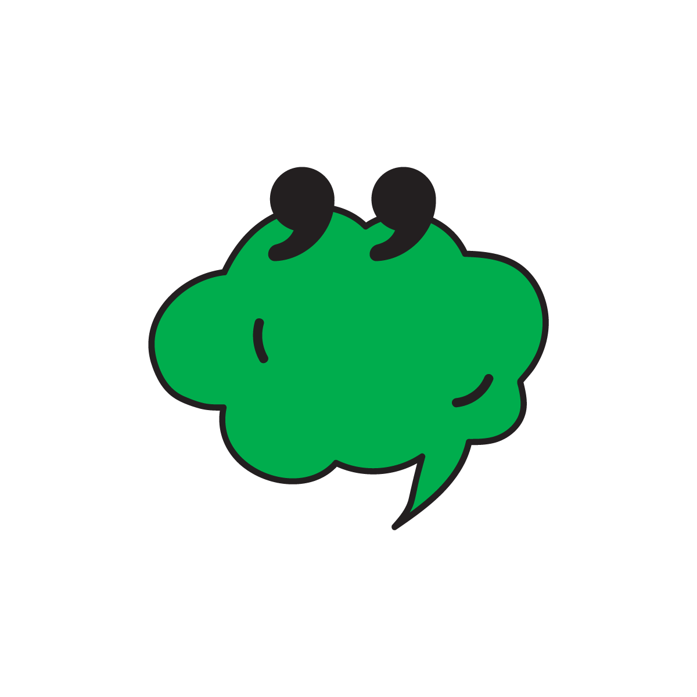

This article is to help you regulate your self-talk. The final goal is to remove your negative self-talk and turn it into something positive and empowering. To interact, please click away all the disturbing thoughts that are interfering with your reading experience.